護肝攻略
國際服單人世界采集火油方法

（早期的天工火，附著在武器上增加氣血傷害）
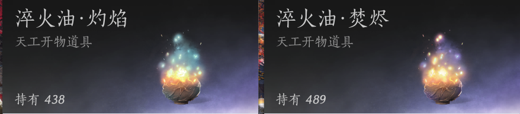
（不見山之后解鎖的高級天工火，需要2火油+1毒或者2火油+1水制造）
缺天工火？缺火油造高級的特殊淬火油？那么來看看這個攻略，希望能幫助到你。
? 所有圖片均可雙擊放大；也可聚焦圖片后按 Enter 查看原圖。
采集佛淚參
可以在單人世界或者多人世界采集佛淚參，佛淚參有幾處密集生長點，可以每天去看看。而且佛淚參有幾率掉落佛淚須，是很多奇術的升級材料。但是多人世界比較難搶到。
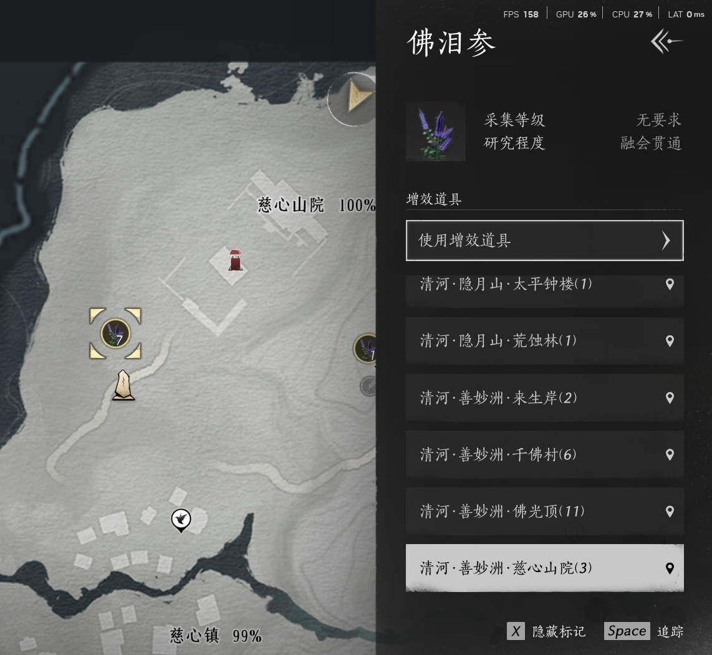
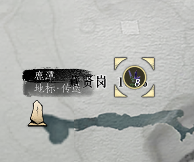
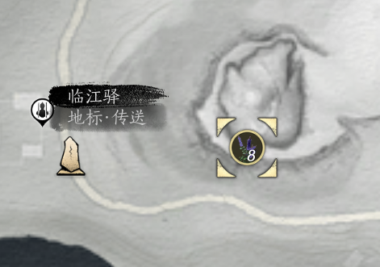

單人世界手動采集火盆
下圖所示的火盆可以采集到1~3個淬火油。

以下這些地點（按照由多到少排序）可以比較密集采集到火油：
開封天上來。整個天上來都是火盆，可以從赤龍堂界碑開始繞圈走，用“聽風辨位”搜索還沒采集的火盆。
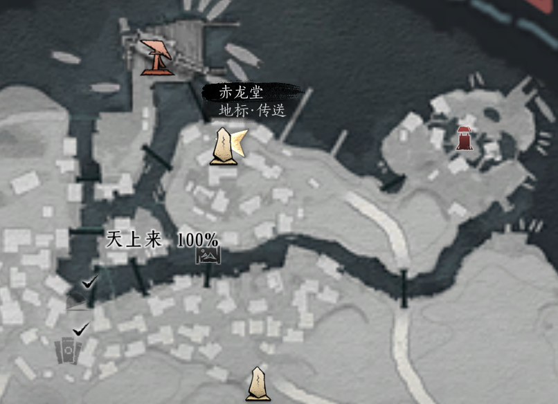
開封白馬驛界碑附近，大家都在用火盆燒紙錢。

清河豐和村村尾（箭頭所在）
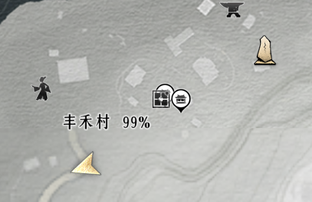
清河別館前山傳送點，沿著箭頭方向一路上山都有火盆，還有繡金樓黑衣人陪你玩耍。

清河佛爺寨，從傳送點到據點之前有6個火盆，可以一路shift安心采。

單人世界建造採火大道
如果你有購買採集馬，有采集足夠的木材的話，可以參考以下方法建造“採火大道”。造好之后就可以騎著採集馬快速采集啦。
圖紙碼分享
| 分享碼 | 圖片 | 作者 | 耗材 |
|---|---|---|---|
SHARE282eb5dc7c6c5ad0 |  | ShinyLatias | 約982原木 |
SHARE13b547403c84966d |  | ShinyLatias | 約1000原木 |
SHAREd12b08b957e24afc | 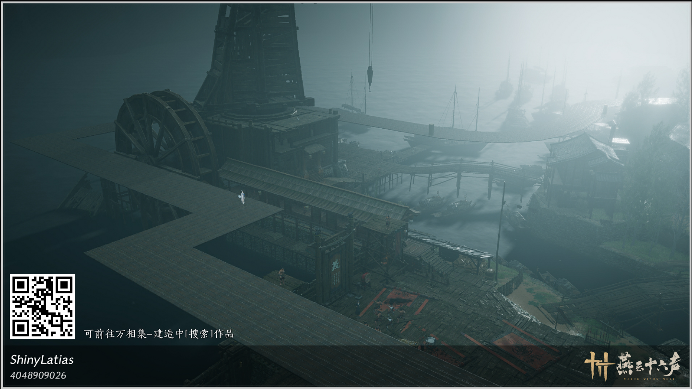 | ShinyLatias | 約491原木 |
SHARE44e08c8829845723 | 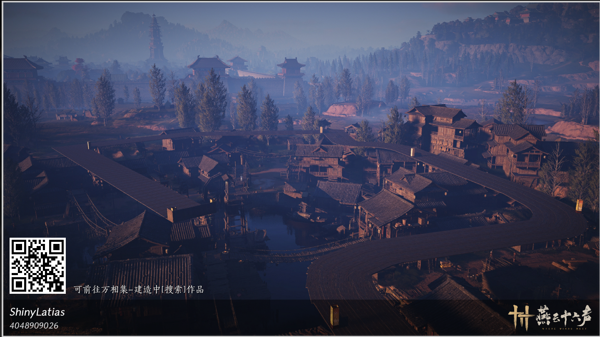 | ShinyLatias | 約864原木 |
SHAREff0c0c92c61e0ec4 | 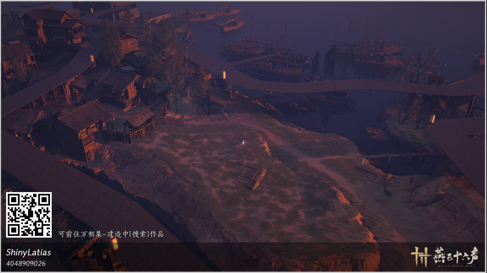 | ShinyLatias | 約196原木 |
建造流程
打開菜單，點擊“外觀”

點擊右邊“萬相集”
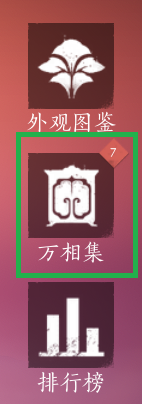
選擇左邊的“建造”，找不到可以上下滾動一下。

右上角搜索欄填入圖紙分享碼

點擊進入搜索出來的圖紙（應該只有一個搜索結果，點進去），點擊“取得圖紙”

可以重復步驟1~5搜索到圖紙之后，再點擊“套用圖紙”。（或者進入建造模式，在你的圖紙背包里找到剛剛獲取的圖紙）
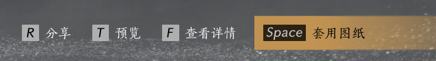
（取得圖紙之后，按鈕變成套用圖紙）點擊“原位擺放”
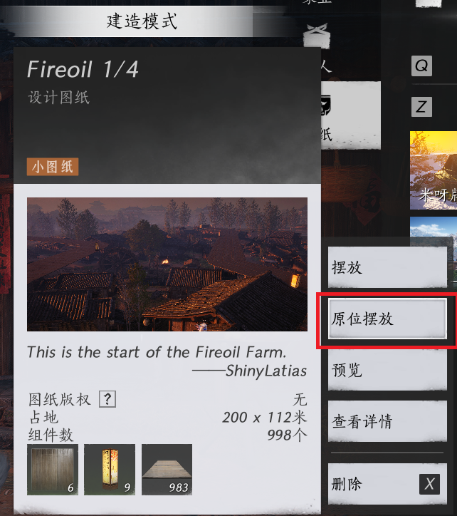
如果出現距離原擺放位置過遠的提示，選擇“前往”。此時會彈出地圖，并且有黃圈顯示圖紙所在范圍，可以自行傳送并且走到圖紙范圍。

進入范圍后重復以上步驟進行“原位擺放”。此時會逐漸擺好藍色的虛影。結束后，靠近藍色虛影，會出現對應圖紙名字的交互選項，如右圖。

交互選擇“自動落成”。等待圖紙自動填充完成。
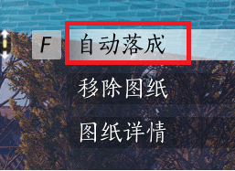
把所有的採火大道圖紙按照同樣的方式自動落成造好。測試通過沒有問題，可進行后續步驟。
完成后，可再靠近造好的大道，同樣出現交互選項，選擇“移除圖紙”

選擇“僅移除圖紙輪廓”。這樣之后采火的時候不會意外觸發圖紙交互選項。